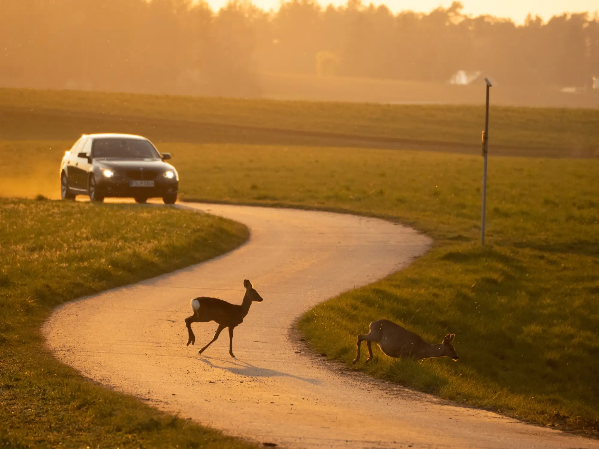
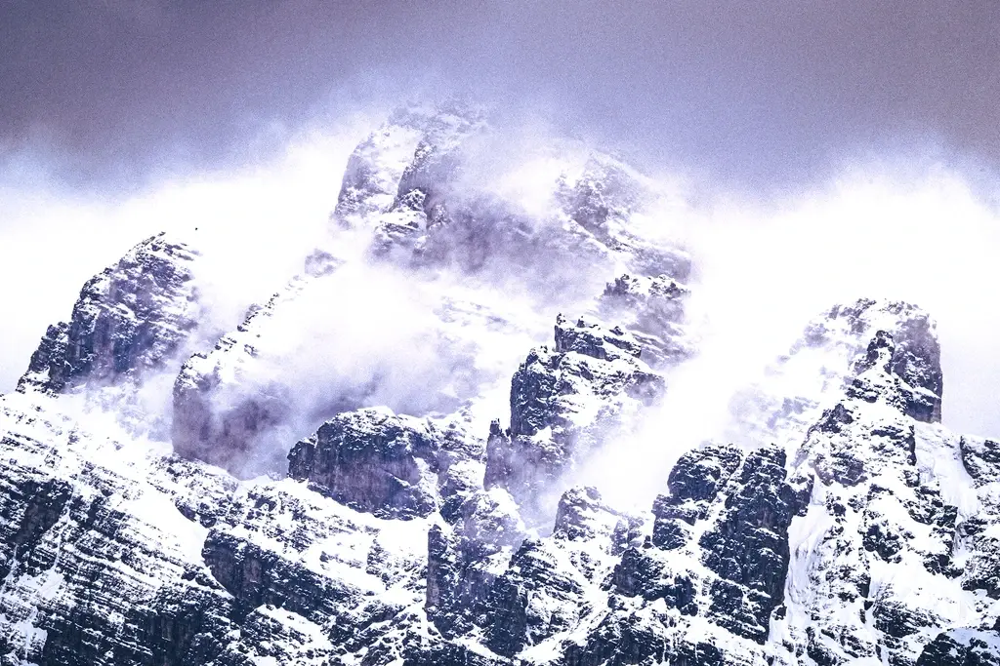

Not a production company — a witness system
We make your impact visible.
Mother Nature was founded with the mission of telling the stories of projects, organizations, and people working to protect the environment. We showcase the connection between people and nature, and the possibilities of living together in harmony. That's what drives us.


"documentation is not neutral — it chooses what survives"


02 — Mission / Reconnection
Mutter Natur was founded with one mission. To tell stories about projects that reconnect Humans and Nature — not as a slogan, but as a cinematic act of remembering.
See the work
Worked with
Who We Work With
We work with organizations that are actively shaping change:
- Environmental NGOs & conservation projects
- Sustainable companies & green brands
- Tourism & nature-based organizations
- Research & scientific institutions
- Impact-driven initiatives with real-world relevance
Our focus is always the same: real stories with real meaning and visible impact.